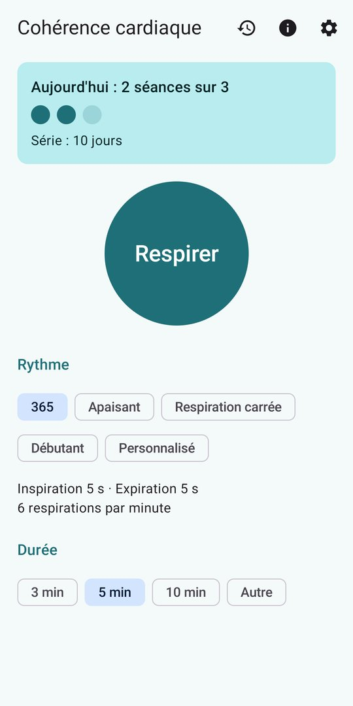
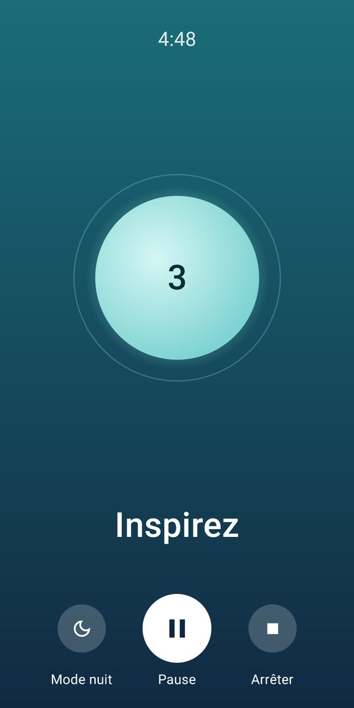
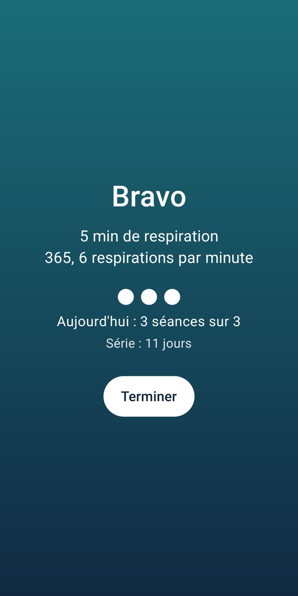
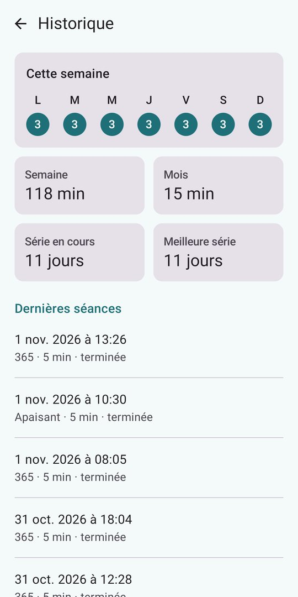
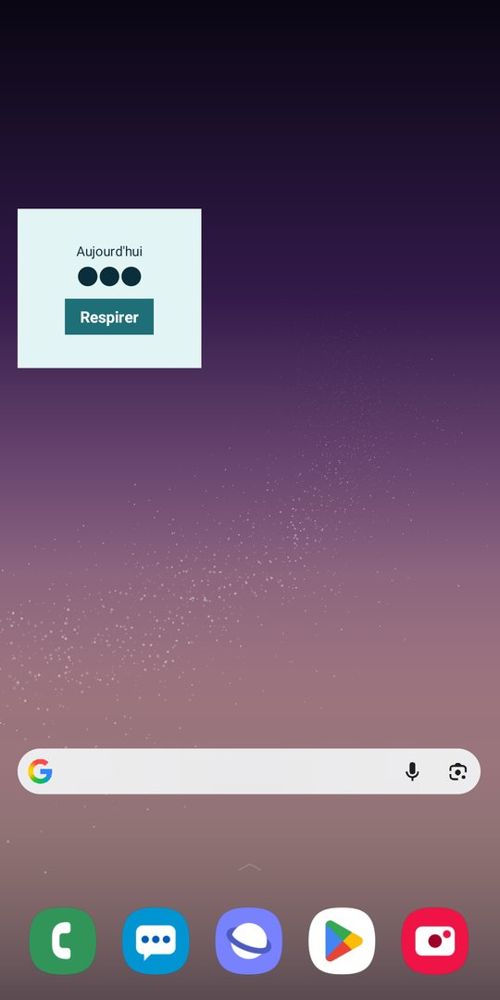
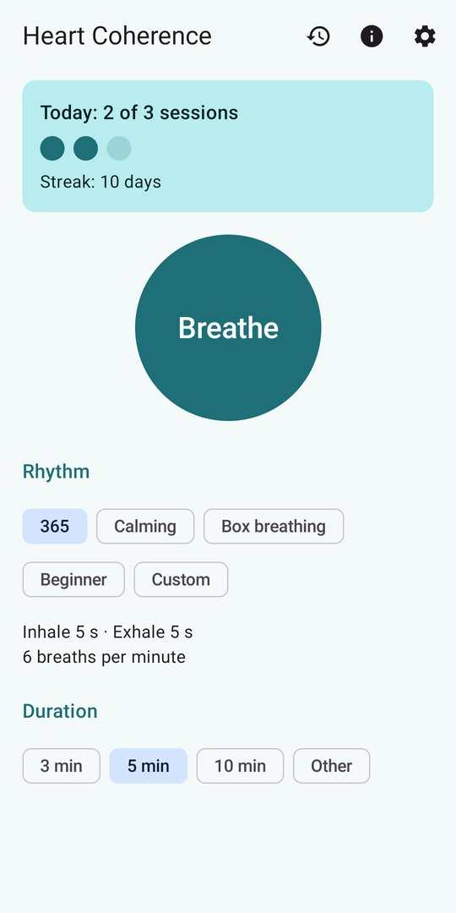
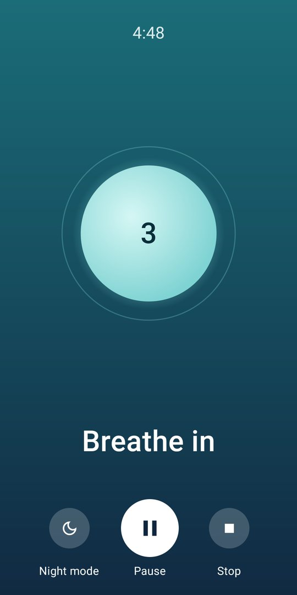
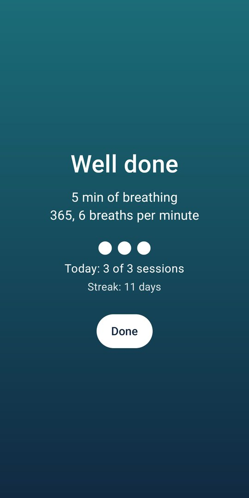
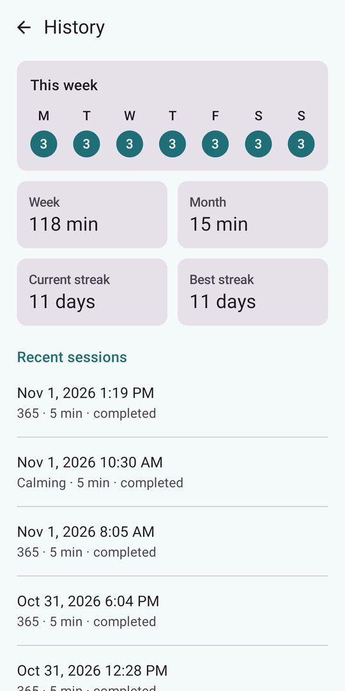
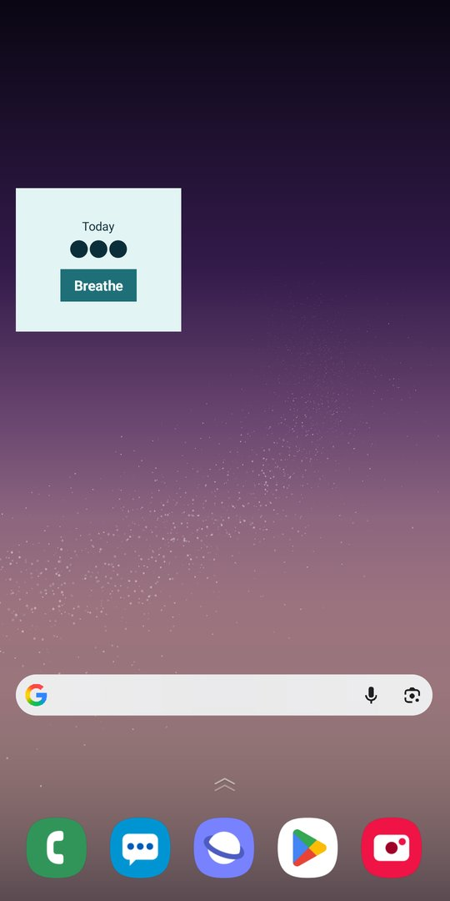

Aperçu
Preview










La cohérence cardiaque, c'est quoi ?
What is heart coherence?
Respirer lentement et régulièrement, autour de 6 respirations par minute, fait varier le rythme du cœur de façon ample et régulière : c'est l'état dit de « cohérence cardiaque ». C'est une façon simple de faire une pause, de se détendre et de gérer le stress du quotidien.
La méthode la plus connue est la méthode 365 : 3 fois par jour, 6 respirations par minute, pendant 5 minutes. La régularité compte plus que la durée : l'application vous aide à tenir le rythme, jour après jour.
Breathing slowly and steadily, at about 6 breaths per minute, makes your heart rate rise and fall in a wide, regular wave: this is known as “heart coherence”. It is a simple way to take a break, relax and handle everyday stress.
The best-known routine is the 365 method: 3 times a day, 6 breaths per minute, for 5 minutes. Regularity matters more than length: the app helps you keep it up, day after day.
Ce que fait l'application
What the app does
Vibrations différentes pour inspirer et expirer, sons doux, et une voix facultative pour démarrer. Chaque signal s'active séparément.
Distinct vibrations for breathing in and out, soft sounds, and an optional voice to get started. Each signal can be turned on or off.
Avec un son ou la voix, la séance continue téléphone posé, écran éteint. La notification affiche le temps restant, avec pause et arrêt.
With a sound or the voice on, the session keeps going with the phone down and the screen off. The notification shows the time left, with pause and stop.
365 (5 s / 5 s), Apaisant (4 s / 6 s), Respiration carrée, Débutant, ou votre propre rythme. Séances de 1 à 20 minutes.
365 (5 s / 5 s), Calming (4 s / 6 s), Box breathing, Beginner, or your own rhythm. Sessions from 1 to 20 minutes.
Objectif du jour (3 séances par défaut), série de jours consécutifs et historique de la semaine et du mois.
Daily goal (3 sessions by default), streak of consecutive days, and weekly and monthly history.
Trois rappels réglables, qui se taisent une fois l'objectif du jour atteint. Le widget montre votre progression et lance la séance d'un geste.
Three adjustable reminders that stay quiet once the daily goal is reached. The widget shows your progress and starts a session in one tap.
Bulle fluide, mode nuit pour pratiquer dans le noir, commandes masquables d'un toucher. Aucune publicité pendant la respiration.
A smooth bubble, a night mode for practising in the dark, controls hidden with one tap. No ads while you breathe.
Gratuit, sans compte et sans abonnement, en français et en anglais. Votre historique reste sur votre téléphone. Une bannière publicitaire discrète finance l'application, jamais pendant une séance.
Free, no account and no subscription, in English and French. Your history stays on your phone. A discreet banner ad funds the app, never during a session.
L'application propose des exercices de respiration pour la détente et ne remplace pas un avis médical. En cas de malaise, d'étourdissement ou de problème cardiaque ou respiratoire, arrêtez l'exercice et consultez un professionnel de santé.
The app offers breathing exercises for relaxation and is not a substitute for medical advice. If you feel unwell or dizzy, or have a heart or breathing problem, stop the exercise and see a health professional.